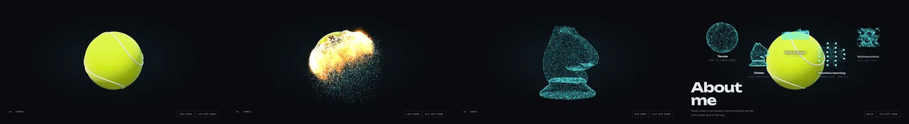
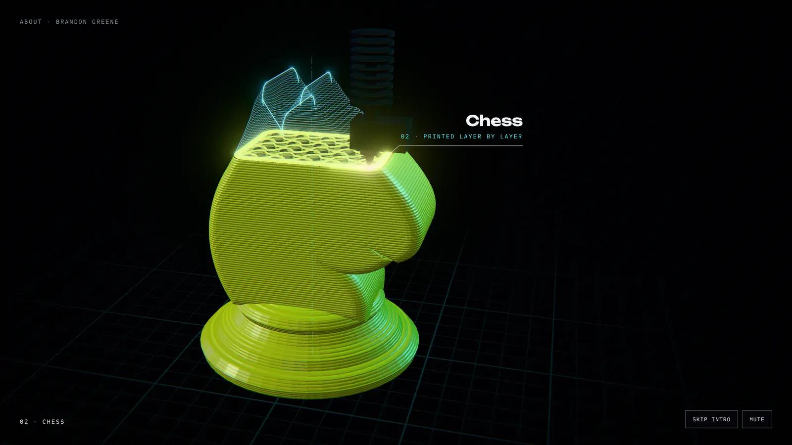
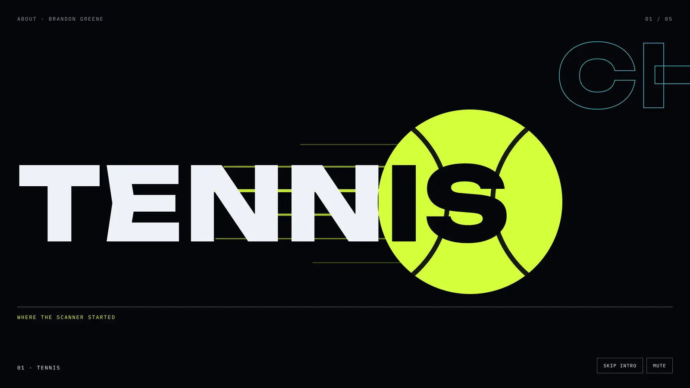

Four ways the About page could open
Each frame is one moment from a direction, rendered from real 3D scenes and the site's own fonts. The motion is described here and gets shown as five-second sketches once you've narrowed it down. Look at them, then answer the questions in the chat.
What runs now: Ignition

The baseline to beat. What it does well: one object carries the whole story, the colour change from optic yellow to ice says "real thing becomes data", and it ends as links. Where it falls short: the camera never moves, every shape is the same blue cloud at the same size in the middle, the fire reads as a glowing blob, and the five pieces sit above a page that is a separate plain column.
Ad cut
Cinematic · photoreal
Shot like a sportswear spot. The ball is in flight after your serve; it catches, burns and throws sparks, on a long lens against black, with a cold rim light against the warm fire.
In motion
Hard cuts between angles: a macro of the felt, the ball crossing frame, a slow-motion beat at the ignition. The word sits huge behind the action. Sound carries the cuts.
Strengths
- The biggest "wow" in the first three seconds
- Exactly the "realistic, professional ad" you asked for
- Your real serve footage could cut straight in
Risks
- Easiest to tip into overstimulating; it needs the one-thing-at-a-time rule more than any other
- Photoreal fire like this is heavy to run live, so it leans toward video
- On its own it's about tennis, not about you building things
Real to scan
Today's idea, shot properly
A scanning sheet climbs the real ball. Above the line it's felt; below it, it's points, which peel away and stream across to build the next thing. Every transition is a scan.
In motion
The line sweeps, the points lift off in a wave and arc across, the camera drifts with the stream. Each new shape is built by the points of the last one, so nothing ever stops dead.
Strengths
- Keeps what you love about Ignition
- Says "scanner" without a word, which is your main project
- Points are cheap to draw live and razor-sharp at any size
Risks
- The closest to what you already have, so the least surprising
- A laser line is a metaphor: your scanner is phone-based. A truer version is phone-camera flashes around the object
Toolpath
Made, layer by layer
Everything gets made the way you make things. Below the nozzle it's solid plastic with real layer lines; the layer going down now glows; above it, the rest waits as an ice-blue drawing.
In motion
The nozzle races the outline, layers stack, the drawing above fills in. The infill is the gyroid, the same surface as the maths piece (slicers really use it), so one detail ties printing to mathematics.
Strengths
- The most "you": a maker, not just effects
- Nobody else's portfolio opens like this
- Comes straight from the site's drawing-sheet roots
Risks
- Slower to read than fire; it needs a fast nozzle and a confident camera
- The quietest of the three 3D options on first impression
Honesty checkYou haven't told me you've printed a chess knight. In the real piece, only things you actually printed get printed (the scanner's calibration object is real), or you tell me you've printed one, or the knight is labelled as an illustration.
Kinetic type
Graphic · editorial
Flat colour and huge type. The ball is a disc that rolls through each word, knocking it out; the next word is already sliding in. At the end, the words are the menu.
In motion
Words slam in on the beat, the disc punches through, masks wipe to the next word. Crisp at any size, and the ending is simply the five words, now links.
Strengths
- Light, fast, works on every phone and even without a GPU
- The most legible: it reads as words first
- Easy to make accessible
Risks
- The least "3D wow", which was the site's original promise
- Big type can feel like text, and phones were meant to get less text
My recommendation: A, then B, then C, as one arc
Real · the ball, shot like an adScanned · it becomes pointsReal, then scanned, then made is the foot scanner's own pipeline: capture a real thing, turn it into data, make something physical from it. If the opening follows that order, the style itself says what you do, before any text does. Each look gets one job, which also keeps it to one thing moving at a time: the ad look for the first two seconds of "wow", the scan for every transition, the print for the ending, where the page itself gets built. D's discipline (big, plain type) goes on the labels.
Choosing it doesn't lock in a medium. That's round 2.
Rendered in this session with three.js, in software (this cloud computer has no GPU), at twice the size and scaled down. The knight and the gyroid come from the site's own code. Frame A's fire is a volume, not sprites, and its felt is 32 layers of fuzz, which is why the edge goes soft. The timecode in A is decoration. "Where the scanner started" is the current site's wording for the tennis piece.